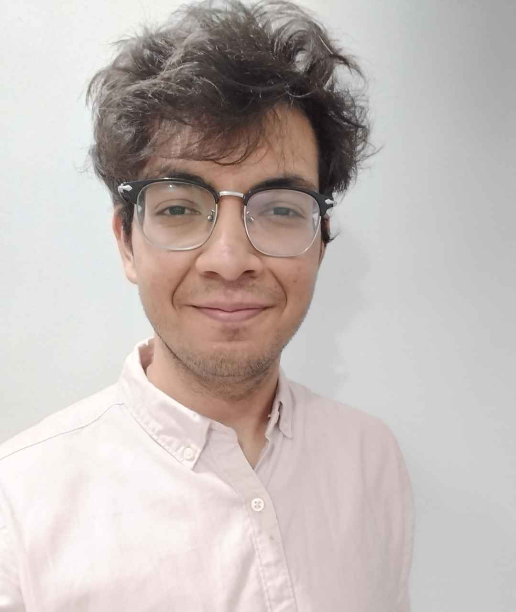

Mohammad Sadiq

Experience
Sportskeeda
Content Writer (August 2024-)
- Wrote 100+ SEO Optimized articles each month.
- Researched and pitched various topics based on trends.
- Managed the website's Backend.
The Free Press Journal
Trainee Sub-Editor (April 2024-July 2024)
- Broke an exclusive front-page story on the ISIS terrorist attack in Oman.
- Wrote and edited 150+ articles.
- Created pages for the Nation, City, World and Sports desks using software.
Business Today
Intern Sub-Editor (May 2023-June 2023)
- Wrote, edited and published 100+ SEO-driven stories for the digital desk.
- Kept track of online trends to ideate and pitch stories.
- Conducted extensive research on current affairs, business, sports, etc.
Education
-
Symbiosis Centre for Media and Communication
2021-2024 BA Mass Communication
-
Indian School Muscat, Oman
2015- 2016 Senior Secondary, 2013- 2014 Higher Secondary
Skills
HTML, Content writing, Reporting, Editing, Research, SEO Optimisation, WordPress, CMS, MS Office, Adobe
Photoshop & InDesign, Proficient in English & Hindi
About Me
Contact Me